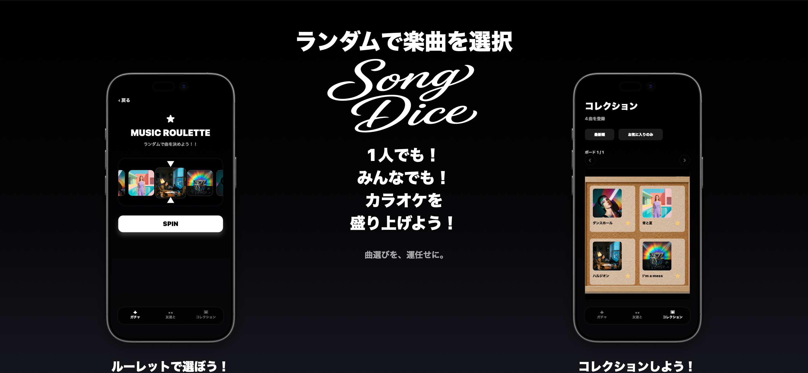
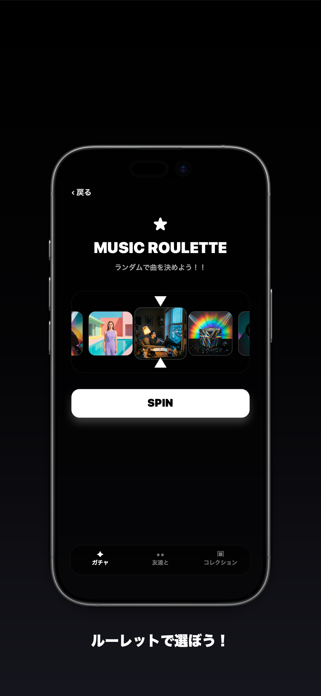
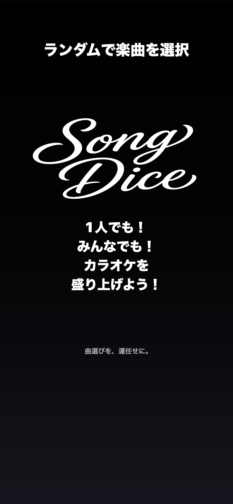
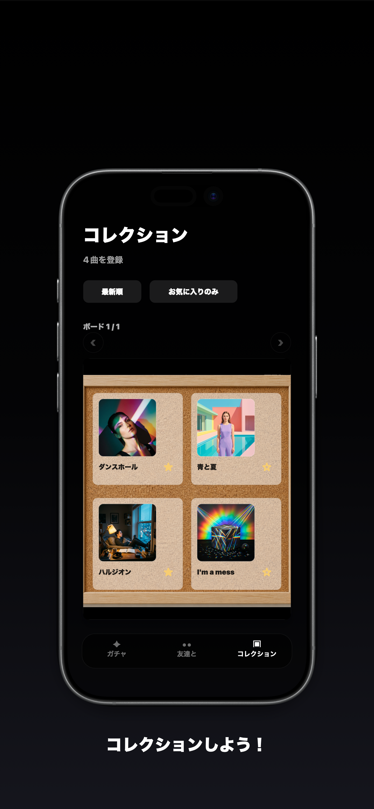

ルーレット選曲
アルバムを選んでSPIN。ジャケットが切り替わる演出で、今日の一曲をランダムに決められます。
SongDice for iPhone
アルバムやApple Musicのプレイリストから、今聴く曲を気持ちよくランダム選曲。 ひとりでも、近くの友達とも、迷う時間をそのまま楽しめます。

What is SongDice?
SongDiceは、曲をただランダムに選ぶだけではなく、ジャケットが流れる演出や結果画面、 コレクション機能で「選ばれる瞬間」まで楽しめるアプリです。
Features
アルバムを選んでSPIN。ジャケットが切り替わる演出で、今日の一曲をランダムに決められます。
自分のプレイリストを読み込み、SongDice内のアルバムとしてルーレット対象にできます。
近くの端末とつながって、同じプレイリストを使いながらそれぞれのルーレットを楽しめます。
選ばれた曲をコレクションとして残し、あとからお気に入りの履歴を見返せます。
Screens



Download
iPhoneのApp StoreでSongDiceを開いてインストールできます。 公開直後で個別ページが表示されない場合は、App Store内で「SongDice」と検索してください。
Support
不具合の報告やご要望はメールで受け付けています。端末の機種、iOSのバージョン、 発生した操作を添えていただくと確認がスムーズです。
timtimtimny0014@gmail.com端末でApple Musicにサインインしていること、設定アプリでSongDiceのメディアアクセスが許可されていることをご確認ください。
SongDice独自のサーバーには送信しません。読み込んだアルバムと曲情報は端末内に保存されます。
曲情報にApple Musicのリンクがある場合は、結果画面からApple Musicで開けます。